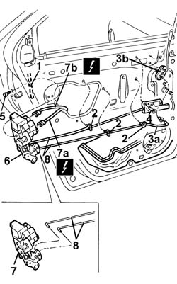
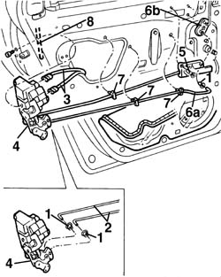

7010N20 rear side door lock motor/catch assembly - r r with door panel and support frame removed
- Path
- Procedures > 70 FITTINGS > 7010 PASSENGER COMPARTMENT REAR SIDE DOORS > 7010N rear side door central locking system > 7010N20 rear side door lock motor/catch assembly - r r with door panel and support frame removed
- Kind
- repair procedure (removal / refitting; the operation number is the code)
- Applies to
- all engines; all production periods
- Interactive page
- https://sloeber94.github.io/elrnDB-a156/en/#/3238694
Applies to: all engines; all production periods
 Removing
Removing
 Refitting
Refitting7010A04 rear side door water guard protection - r r or arrange with door panel removed
1. Disconnect, from the lock side, the linkage connecting to the outer handle.
2. Release the rod guide springs from the door frame.
3. Disconnect the rod (3a) from the idler (3b).
4. Undo the bolts fixing the inner handle.
5. Unscrew the catch retaining bolts.
6. Move the lock over slightly.
7. Disconnect the electrical connections (7a, 7b), then extract the lock.
 | Name | Connector |
|---|---|---|
7a | Left rear. door lock geared motor |
| Name | Connector |
|---|---|---|
7b | Left rear. door lock geared motor |
| Name | Connector |
|---|---|---|
7a | Rear door lock geared motor right |
| Name | Connector |
|---|---|---|
7b | Left rear. door lock geared motor |
8. If necessary, separate the two rods from the lock.

Applies to: all engines; all production periods
Refitting
RemovingCheck that the lock is intact and undamaged.
1. Replace the retaining bushes for the disconnected rods.
2. If separated, connect the two rods to the lock.
3. Connect the electrical connections.
4. Fit the lock and fix it using the bolts.
5. Tighten the bolts fixing the inner handle.
6. Connect the rod (6a) to the idler (6b).
7. Fix the rod guide springs.
8. Connect the connecting rod with the outer handle from the lock side.

Applies to: all engines; all production periods
Check that the lock works properly by operating the inner and outer handles.
7010A04 rear side door water guard protection - r r or arrange with door panel removed
Topics linked from this page (4)
- 7010A04 rear side door water guard protection - r r or arrange with door panel removed
- N55A Left rear. door lock geared motor ( REAR LEFT DOOR )
- N55B Left rear. door lock geared motor ( REAR LEFT DOOR )
- N56A Rear door lock geared motor right ( REAR RIGHT DOOR )